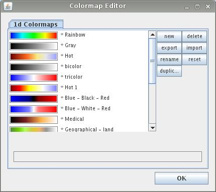
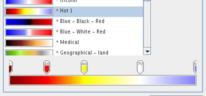

|
|
|
COLORMAP EDITOR
The colormap editor is raised by choosing Edit -> Colormap Editor.

The colormap editor enables the user to design his or her own colormaps. It lists all predefined and user defined colormaps.
The colormap slider at the bottom of the colormap editor shows the exact structure of a chosen colormap. The slider enables edition of user defined colormaps.

The menu on the right hand side of the colormap editor contains the following options:
The structure of a 1D colormap
A colormap consists of a series of control points at chosen positions with dedicated colors. In between control points the color values are approximated linearly.
Designing a colormap
Start to build a new colormap by:
The second way raises a dialog window for the new colormap name. In both cases the new colormap is listed at the very bottom of the colormap list.
Choose the new/duplicated colormap from the list. In order to set appropriate control points double click left mouse button at the left or right endpoint marker of the color slider. The duplicated marker can be moved to an appropriate position of the slider. The number in the marker determines the position of the marker in a scale from 0 to 100.
Right mouse click at the marker raises the color editor. Choose a color from the three available Swatches, HSB and RGB tabs.
In order to delete a marker drag it away from the slider using left mouse button.